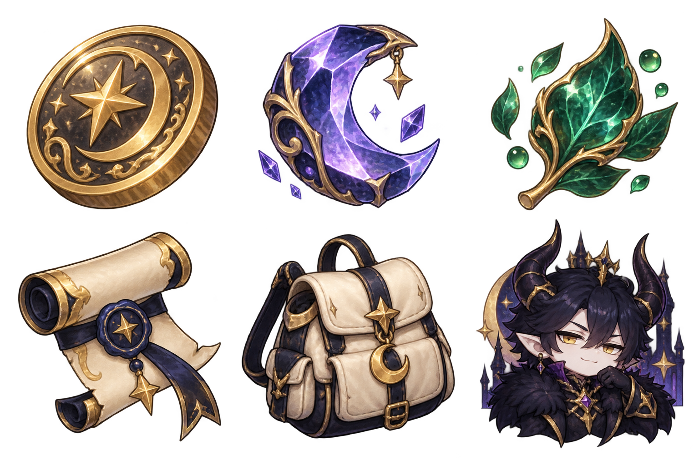

HUD 资源与入口图标候选 · 待 Owner 审阅

尚不可进入正式游戏。 此图为 1536×1024 的透明六格 sheet；原图透明度合格，但每格仍须独立裁取、逐件人审、登记哈希并绑定真实消费点，不能把整张 sheet 当作一个运行时图标。
建议消费映射
- 上排：金币、月晶、月叶 → 右上资源图标。
- 下排：卷轴、背包、角色 → J / I / C 入口图标。
请在候选审阅中选择
- 推荐：保留这一版造型，确定性裁成六个独立透明 PNG，再对六个成品逐一审阅。
- 重新生成六个独立透明 PNG：仅当希望改变造型、构图或尺寸时采用。
- 不采用：维持当前可用的通用图标/占位回退。
正式导入前会登记每个单件的来源、许可、透明度、哈希和实际 Life Host 消费点；不会把整张 sheet 当作运行时图标。